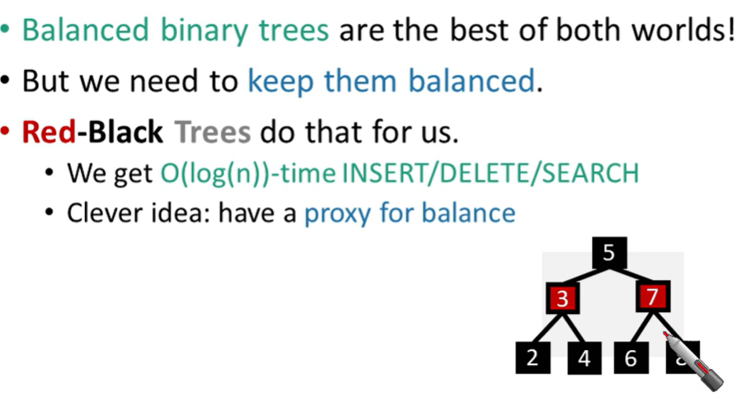

Algorithms Week 7
Binary search tree

Turns out that’s not a great idea. Instead we turn to…
Idea 1: Rotations
Does this work?
Whenever something seems unbalanced, do rotations until it’s okay gain. -> Even for me this is pretty vague. What do we mean by “seems unbalanced”? What’s “okay”?
Idea 2: have some proxy for balance
Red-Black Trees
This is pretty balanced.
- The black nodes are balanced.
- The red nodes are “spread out” so they don’t mess things up too much.
We can maintain this property as we insert/delete nodes, by using rotations.
The Red-Black structure is a proxy for balance. It’s just a little weaker than perfect balance, but we can actually maintain it.
Okay, so it’s balanced, but can we maintain it? -> Yes
일단 red로 insert하고, grandparent와 parent의 색을 바꿈
root까지 recursive하게 색을 바꿔주면서 올라가면 됨
딱 하나의 case만 고치는 예제 코드
Deleting from a Red-Black tree
